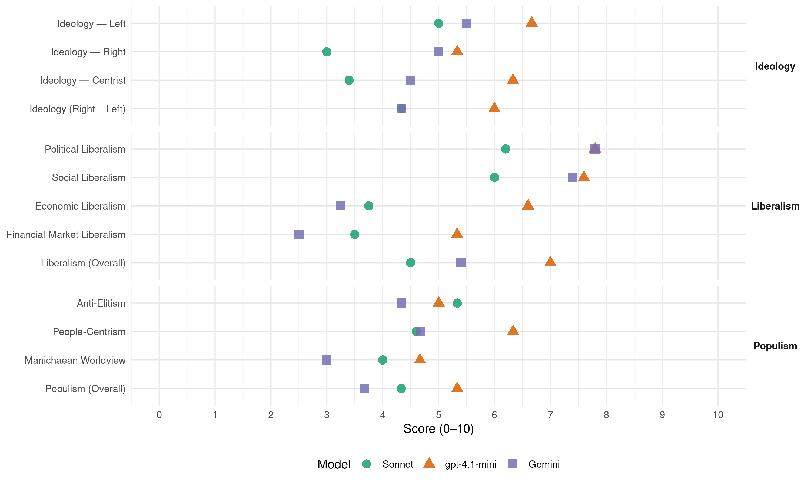

Sp (Norway, 2001)
manifesto_id 12810_200109
Get full text: This site shows derived annotations and short verbatim quotes only. The full manifesto text is © Manifesto Project / WZB — obtain it via manifesto-project.wzb.eu using the manifesto_id above.
Headline scores
| Dimension | Sonnet | gpt-4.1-mini | Gemini |
|---|---|---|---|
| Populism (Overall) | 4.3 | 5.3 | 3.7 |
| Anti-Elitism | 5.3 | 5.0 | 4.3 |
| People-Centrism | 4.6 | 6.3 | 4.7 |
| Manichaean Worldview | 4.0 | 4.7 | 3.0 |
| Ideology (Right − Left) | 4.3 | 6.0 | 4.3 |
| Liberalism (Overall) | 4.5 | 7.0 | 5.4 |
| Political Liberalism | 6.2 | 7.8 | 7.8 |
| Social Liberalism | 6.0 | 7.6 | 7.4 |
| Economic Liberalism | 3.8 | 6.6 | 3.2 |
| Financial-Market Liberalism | 3.5 | 5.3 | 2.5 |
Evidence per dimension
Economic Liberalism
Gemini · score 4.0 · verified · chunk 1
“blandingsøkonomi * privat eigedomsrett for dei mange”
Viktige grunnpilarar i Senterpartiet sin politikk er: * desentralisering av makt, kapital og busetjing * eit samfunn i økologisk balanse * kulturelt rotfeste * fridom for enkeltmennesket, med ansvar for seg sjølv og fellesskapen * blandingsøkonomi * privat eigedomsrett for dei mange
Gemini · score 3.0 · verified · chunk 2
“omsorgstenester ikkje vert privatiserte eller”
Senterpartiet vil: * arbeide for at omsorgstenester ikkje vert privatiserte eller konkurranseutsette. * styrkje rolla til
Gemini · score 3.0 · verified · chunk 3
“gå imot privatisering av Statkraft”
skatt på sal av konsesjonskraft. * gå imot privatisering av Statkraft SF og Statnett SF.
Gemini · score 4.0 · mixed · chunk 4
“forkastar prinsippet om næringsnøytralitet”
Ein nasjonal næringslivsstrategi krev at vi forkastar prinsippet om næringsnøytralitet (som går ut på
Gemini · score 3.0 · verified · chunk 5
“Politisk kontroll av marknaden”
for store kapitalkonsentrasjonar eller urettvis fordeling av verdiar. Politisk kontroll av marknaden og kapitalrørslene er
gpt-4.1-mini · score 6.0 · verified · chunk 1
“Marknadsliberalisme og privatisering framstår i dag som ei naturlov som vi ikkje kan gjere anna med enn å tilmåte oss”
Etter Senterpartiet sitt syn har den frie flyten av kapital gått for langt. Marknadsliberalisme og privatisering framstår i dag som ei naturlov som vi ikkje kan gjere anna med enn å tilmåte oss. Sjølvsagt er dette feil. Politiske vedtak kan snu utviklinga, slik det var politiske vedtak som sette i gang utviklinga. Senterpartiet vil ta denne kampen.
gpt-4.1-mini · score 7.0 · verified · chunk 2
“jamne ut maktbalansen i næringslivet til fordel for dei mange mindre og sjølvstendige næringsdrivande”
Senterpartiet vil: * jamne ut maktbalansen i næringslivet til fordel for dei mange mindre og sjølvstendige næringsdrivande, til dømes gjennom konkurranselovgjevinga.
gpt-4.1-mini · score 7.0 · verified · chunk 3
“Næringsutvikling og auka verdiskaping er naudsynt for å oppretthalde velferdssamfunnet, bidra til høg sysselsetjing og busetjing i alle delar av landet”
Næringsutvikling og auka verdiskaping er naudsynt for å oppretthalde velferdssamfunnet, bidra til høg sysselsetjing og busetjing i alle delar av landet og kompensere for lågare oljeinntekter i framtida. Senterpartiet vil føre ein politikk som sikrar gode vilkår for næringsutvikling, med vekt på kunnskap, nyskaping og ressursutnytting.
gpt-4.1-mini · score 7.0 · verified · chunk 4
“skattesystemet som i større grad lèt dei få ha kapital i bedrifta, som kan brukast til investeringar”
…Senterpartiet vil: * fremje utvikling i små og mellomstore bedrifter gjennom eit skattesystem som i større grad lèt dei få ha kapital i bedrifta, som kan brukast til investeringar. * bruke skattesystemet til å fremje aktiv eigarskap, mellom anna gjennom å endre eller fjerne delingsmodellen.
gpt-4.1-mini · score 6.0 · verified · chunk 5
“marknaden er viktig for å sikre fellesgode og felles velferdsmål. Samstundes vert det kravt politisk styring for å hindre marknadssvikt”
Utgangspunktet for Senterpartiet har alltid vore at marknaden er viktig for å sikre fellesgode og felles velferdsmål. Samstundes vert det kravt politisk styring for å hindre marknadssvikt i form av for store kapitalkonsentrasjonar eller urettvis fordeling av verdiar.
Sonnet · score 4.0 · verified · chunk 1
“temje marknaden”
Dette krev vilje til å ta større kontroll over samfunnsutviklinga og i større grad temje marknaden. Velstandsgapet mellom generasjonane er ein trugsel mot samfunnssolidariteten og velferdsstaten.
Sonnet · score 4.0 · verified · chunk 2
“arbeide mot privatisering av omsorgstenester”
Senterpartiet vil: * arbeide for at omsorgstenester ikkje vert privatiserte eller konkurranseutsette.
Sonnet · score 4.0 · mixed · chunk 3
“konkurransedyktige skattar og avgifter”
Dette krev satsing på utdanning og forsking, utbygging av moderne infrastruktur, som tilbod om breiband til alle heimar, konkurransedyktige skattar og avgifter baserte på prinsippet om skatt etter evne
Sonnet · score 4.0 · verified · chunk 4
“forkastar prinsippet om næringsnøytralitet”
Ein nasjonal næringslivsstrategi krev at vi forkastar prinsippet om næringsnøytralitet (som går ut på å handsame alle næringar likt, slik at kapitalen strøymer til dei næringane som til eikvar tid gjev størst avkastning).
Sonnet · score 3.0 · verified · chunk 5
“Politisk kontroll av marknaden og kapitalrørslene”
Global finansiell ustabilitet er eit resultat av manglande politisk styring. Politisk kontroll av marknaden og kapitalrørslene er naudsynt, både globalt og nasjonalt.
Financial-Market Liberalism
Gemini · score 2.0 · verified · chunk 1
“frie flyten av kapital gått for langt”
Etter Senterpartiet sitt syn har den frie flyten av kapital gått for langt. Marknadsliberalisme og privatisering framstår i dag som ei naturlov
Gemini · score 2.0 · verified · chunk 3
“skattlegging av kapitaltransaksjonar over landegrensene”
rettferdig handel, og går inn for auka skattlegging av kapitaltransaksjonar over landegrensene, til dømes gjennom Tobinskatt.
Gemini · score 4.0 · verified · chunk 4
“førebyggje og straffe juks i finansmarknaden”
eit betre kontrollapparat for å førebyggje og straffe juks i finansmarknaden. Vi går
Gemini · score 2.0 · verified · chunk 5
“styre kapitalressursane mot utviklingsføremål”
flyt relativt fritt over landegrensene, er å styre kapitalressursane mot utviklingsføremål i staden for
gpt-4.1-mini · score 5.0 · verified · chunk 1
“Den frie flyten av kapital gått for langt”
Etter Senterpartiet sitt syn har den frie flyten av kapital gått for langt. Marknadsliberalisme og privatisering framstår i dag som ei naturlov som vi ikkje kan gjere anna med enn å tilmåte oss. Sjølvsagt er dette feil. Politiske vedtak kan snu utviklinga, slik det var politiske vedtak som sette i gang utviklinga. Senterpartiet vil ta denne kampen.
gpt-4.1-mini · score 6.0 · verified · chunk 4
“Senterpartiet ønskjer å bidra til at vi får eit klårare lovverk mot innsidehandel”
…Senterpartiet ønskjer å bidra til at vi får eit klårare lovverk mot innsidehandel, og eit betre kontrollapparat for å førebyggje og straffe juks i finansmarknaden. Vi går difor inn for å opprette eit eige aksjetilsyn, som skal kontrollere at alle aktørar får korrekt, lik og samstundes informasjon om dei ulike selskapa, og at dei andre reglane om innsidehandel vert respekterte.
gpt-4.1-mini · score 5.0 · verified · chunk 5
“Politisk kontroll av marknaden og kapitalrørslene er naudsynt, både globalt og nasjonalt”
Global finansiell ustabilitet er eit resultat av manglande politisk styring. Politisk kontroll av marknaden og kapitalrørslene er naudsynt, både globalt og nasjonalt. Auka politisk styring av finanssystemet i verda er det aller viktigaste for å sikre utvikling og fordeling mellom nord og sør.
Sonnet · score 3.0 · verified · chunk 1
“den frie flyten av kapital gått for langt”
Etter Senterpartiet sitt syn har den frie flyten av kapital gått for langt. Marknadsliberalisme og privatisering framstår i dag som ei naturlov som vi ikkje kan gjere anna med enn å tilmåte oss.
Sonnet · score 3.0 · verified · chunk 3
“auka skattlegging av kapitaltransaksjonar over landegrensene”
Vi vil arbeide for ein ny internasjonal handelspolitikk basert på rettferdig handel, og går inn for auka skattlegging av kapitaltransaksjonar over landegrensene, til dømes gjennom Tobinskatt.
Sonnet · score 6.0 · verified · chunk 4
“klårare lovverk mot innsidehandel”
Senterpartiet ønskjer å bidra til at vi får eit klårare lovverk mot innsidehandel, og eit betre kontrollapparat for å førebyggje og straffe juks i finansmarknaden.
Sonnet · score 2.0 · verified · chunk 5
“internasjonal avgift på valutatransaksjonar”
arbeide for ei internasjonal avgift på valutatransaksjonar, der inntektene vert overførte til SN, som til dømes ein Tobinskatt.
Political Liberalism
Gemini · score 8.0 · verified · chunk 1
“Aktiv deltaking i demokratiske prosessar”
Deltaking og demokrati Aktiv deltaking i demokratiske prosessar er eit viktig vilkår for å oppretthalde folkestyret.
Gemini · score 8.0 · verified · chunk 2
“sikre ei fri og uavhengig presse”
mediepolitikk er å sikre ei fri og uavhengig presse, oppretthalde mangfaldet og spreie
Gemini · score 8.0 · verified · chunk 3
“sikre eit levande demokrati”
velferdssamfunnet, sikre eit levande demokrati og skape berekraftig
Gemini · score 7.0 · verified · chunk 4
“lokalt og regionalt folkestyre”
Lokalt og regionalt folkestyre: Senterpartiet meiner at lokalt demokrati og nærleik
Gemini · score 8.0 · verified · chunk 5
“aktivt folkestyre, betre fordeling”
Senterpartiet for eit aktivt folkestyre, betre fordeling, kulturelt mangfald og
gpt-4.1-mini · score 8.0 · verified · chunk 1
“Senterpartiet vil grunnlovsfeste staten sitt ansvar for å leggje tilhøva til rette for ein open og opplyst offentleg samtale”
Senterpartiet vil arbeide for at offentleglova vert praktisert i tråd med intensjonane. Arbeidet i folkevalde organ og offentleg forvaltning skal gå føre seg så ope som mogleg. Offentleg forvaltning skal hjelpe til med å oppfylle kravet den enkelte borgaren har til innsyn, mellom anna gjennom rettleiing om rettar og om korleis innsyn kan oppnåast. Senterpartiet vil grunnlovsfeste staten sitt ansvar for å leggje tilhøva til rette for ein open og opplyst offentleg samtale.
gpt-4.1-mini · score 8.0 · verified · chunk 2
“sikre ei fri og uavhengig presse, oppretthalde mangfaldet og spreie eigarskapen i media”
Grunnleggjande mål for Senterpartiet sin mediepolitikk er å sikre ei fri og uavhengig presse, oppretthalde mangfaldet og spreie eigarskapen i media. Det er viktig å sikre norsk eigarskap i dei mest sentrale media.
gpt-4.1-mini · score 8.0 · verified · chunk 3
“Stortinget har større handlefridom i den økonomiske politikken enn dei fleste andre folkevalde forsamlingar”
Stortinget har større handlefridom i den økonomiske politikken enn dei fleste andre folkevalde forsamlingar. Senterpartiet vil ta vare på denne handlefridomen, og står for ein økonomisk politikk som går ut på å korrigere dei svake sidene ved marknadsøkonomien.
gpt-4.1-mini · score 8.0 · verified · chunk 4
“Noreg skal framleis basere forsvars- og tryggingspolitikken sin på NATO-medlemskap”
…Noreg skal framleis basere forsvars- og tryggingspolitikken sin på NATO-medlemskap og aktivt arbeid i SN og OSSE. Noreg skal vere ein aktiv samarbeidspartnar i internasjonal krisehandtering.
gpt-4.1-mini · score 7.0 · verified · chunk 5
“Respekten for menneskerettane må liggje til grunn for Noreg sitt internasjonale engasjement på alle plan”
Respekten for menneskerettane må liggje til grunn for Noreg sitt internasjonale engasjement på alle plan. Dette gjeld både sosiale og økonomiske rettar og politiske og sivile rettar.
Sonnet · score 7.0 · verified · chunk 1
“grunnlovsfeste rådgjevande folkerøystingar”
Senterpartiet vil: * grunnlovsfeste rådgjevande folkerøystingar. Slike røystingar bør brukast i spørsmål av stor nasjonal vekt.
Sonnet · score 6.0 · verified · chunk 2
“sikre ei fri og uavhengig presse”
Grunnleggjande mål for Senterpartiet sin mediepolitikk er å sikre ei fri og uavhengig presse, oppretthalde mangfaldet og spreie eigarskapen i media.
Sonnet · score 6.0 · verified · chunk 3
“sikre eit levande demokrati”
Dette er viktig for næringsutvikling og arbeidsplassar i framtida, men òg for å ta vare på og vidareutvikle velferdssamfunnet, sikre eit levande demokrati og skape berekraftig utvikling.
Sonnet · score 6.0 · verified · chunk 4
“lokalt demokrati og nærleik til avgjerder”
Senterpartiet meiner at lokalt demokrati og nærleik til avgjerder er grunnleggjande for at folk sjølv kan ta ansvar for utviklinga.
Sonnet · score 6.0 · verified · chunk 5
“demokratibygging”
norske organisasjonar og politiske parti skal arbeide meir aktivt bilateralt og internasjonalt med politisk skulering og demokratibygging.
Liberalism (Overall)
Gemini · score 6.0 · verified · chunk 1
“Aktiv deltaking i demokratiske prosessar”
Deltaking og demokrati Aktiv deltaking i demokratiske prosessar er eit viktig vilkår for å oppretthalde folkestyret.
Gemini · score 6.0 · verified · chunk 2
“sikre ei fri og uavhengig presse”
mediepolitikk er å sikre ei fri og uavhengig presse, oppretthalde mangfaldet og spreie
Gemini · score 5.0 · verified · chunk 3
“korrigere dei svake sidene ved marknadsøkonomien”
økonomisk politikk som går ut på å korrigere dei svake sidene ved marknadsøkonomien. Desse svake sidene
Gemini · score 5.0 · verified · chunk 4
“lokalt og regionalt folkestyre”
Lokalt og regionalt folkestyre: Senterpartiet meiner at lokalt demokrati og nærleik
Gemini · score 5.0 · verified · chunk 5
“aktivt folkestyre, betre fordeling”
Senterpartiet for eit aktivt folkestyre, betre fordeling, kulturelt mangfald og
gpt-4.1-mini · score 7.0 · verified · chunk 1
“Senterpartiet vil grunnlovsfeste staten sitt ansvar for å leggje tilhøva til rette for ein open og opplyst offentleg samtale”
Senterpartiet vil arbeide for at offentleglova vert praktisert i tråd med intensjonane. Arbeidet i folkevalde organ og offentleg forvaltning skal gå føre seg så ope som mogleg. Offentleg forvaltning skal hjelpe til med å oppfylle kravet den enkelte borgaren har til innsyn, mellom anna gjennom rettleiing om rettar og om korleis innsyn kan oppnåast. Senterpartiet vil grunnlovsfeste staten sitt ansvar for å leggje tilhøva til rette for ein open og opplyst offentleg samtale.
gpt-4.1-mini · score 8.0 · verified · chunk 2
“sikre ei fri og uavhengig presse, oppretthalde mangfaldet og spreie eigarskapen i media”
Grunnleggjande mål for Senterpartiet sin mediepolitikk er å sikre ei fri og uavhengig presse, oppretthalde mangfaldet og spreie eigarskapen i media. Det er viktig å sikre norsk eigarskap i dei mest sentrale media.
gpt-4.1-mini · score 7.0 · verified · chunk 3
“Næringsutvikling og auka verdiskaping er naudsynt for å oppretthalde velferdssamfunnet, bidra til høg sysselsetjing og busetjing i alle delar av landet”
Næringsutvikling og auka verdiskaping er naudsynt for å oppretthalde velferdssamfunnet, bidra til høg sysselsetjing og busetjing i alle delar av landet og kompensere for lågare oljeinntekter i framtida. Senterpartiet vil føre ein politikk som sikrar gode vilkår for næringsutvikling, med vekt på kunnskap, nyskaping og ressursutnytting.
gpt-4.1-mini · score 7.0 · verified · chunk 4
“Senterpartiet ønskjer å bidra til at vi får eit klårare lovverk mot innsidehandel”
…Senterpartiet ønskjer å bidra til at vi får eit klårare lovverk mot innsidehandel, og eit betre kontrollapparat for å førebyggje og straffe juks i finansmarknaden. Vi går difor inn for å opprette eit eige aksjetilsyn, som skal kontrollere at alle aktørar får korrekt, lik og samstundes informasjon om dei ulike selskapa, og at dei andre reglane om innsidehandel vert respekterte.
gpt-4.1-mini · score 6.0 · verified · chunk 5
“Respekten for menneskerettane må liggje til grunn for Noreg sitt internasjonale engasjement på alle plan”
Respekten for menneskerettane må liggje til grunn for Noreg sitt internasjonale engasjement på alle plan. Dette gjeld både sosiale og økonomiske rettar og politiske og sivile rettar.
Sonnet · score 5.0 · verified · chunk 1
“Alle skal ha likeverdige moglegheiter, uavhengig av kjønn”
Alle skal ha likeverdige moglegheiter, uavhengig av kjønn, alder, legning, funksjonsnivå, sivilstand, bustad, livssyn og etnisk tilhøyrsle.
Sonnet · score 5.0 · mixed · chunk 2
“sikre ei fri og uavhengig presse”
Grunnleggjande mål for Senterpartiet sin mediepolitikk er å sikre ei fri og uavhengig presse, oppretthalde mangfaldet og spreie eigarskapen i media.
Sonnet · score 5.0 · mixed · chunk 3
“korrigere dei svake sidene ved marknadsøkonomien”
Senterpartiet vil ta vare på denne handlefridomen, og står for ein økonomisk politikk som går ut på å korrigere dei svake sidene ved marknadsøkonomien.
Sonnet · score 5.0 · mixed · chunk 4
“aksjemarknad som er ryddig og oversiktleg”
Senterpartiet meiner at næringslivet er best tent med ein aksjemarknad som er ryddig og oversiktleg både for profesjonelle investorar og for småspararar
Sonnet · score 4.0 · verified · chunk 5
“Politisk kontroll av marknaden og kapitalrørslene er naudsynt”
Global finansiell ustabilitet er eit resultat av manglande politisk styring. Politisk kontroll av marknaden og kapitalrørslene er naudsynt, både globalt og nasjonalt.
Anti-Elitism
Gemini · score 6.0 · verified · chunk 1
“styrt av ein liten og snever maktelite”
Næringslivet er styrt av ein liten og snever maktelite som fjernar seg meir og meir frå folk.
Gemini · score 3.0 · verified · chunk 4
“eigarar og leiarar stiller seg utanfor”
Det er viktig at ikkje eigarar og leiarar stiller seg utanfor allmenne oppfatningar her i landet
Gemini · score 4.0 · verified · chunk 5
“det eliteprega EU-prosjektet”
nedanfrå, i motsetnad til det eliteprega EU-prosjektet. Senterpartiet vil jobbe
gpt-4.1-mini · score 7.0 · verified · chunk 1
“Næringslivet er styrt av ein liten og snever maktelite som fjernar seg meir og meir frå folk”
Gjennom fusjonar innan næringslivet vert stendig meir makt samla på færre hender og utøvd i lukka styrerom. Handelsnæringane, bank- og finansnæringane og media er gode døme på dette. Næringslivet er styrt av ein liten og snever maktelite som fjernar seg meir og meir frå folk. Skjerpa konkurranse har ført til større produksjonseiningar på færre stader.
gpt-4.1-mini · score 3.0 · verified · chunk 4
“Ein einsidig identifikasjon med interessene til kapitalen ubunde av nasjonale omsyn”
…at folk respekterer kvarandre og seier meininga si uavhengig av status, og at tilhøva på arbeidsplassane er kjenneteikna av sjølvstende og tryggleik, ikkje underlegne haldningar. Ein einsidig identifikasjon med interessene til kapitalen ubunde av nasjonale omsyn eller omsynet til fellesskapen, er ein mentalitet Senterpartiet sterkt vil åtvare mot. Senterpartiet ser det som ei hovudoppgåve å sørgje for spelereglar og ta i bruk verkemiddel som sikrar ein hovudsakleg nasjonal eigarskap.
gpt-4.1-mini · score 5.0 · verified · chunk 5
“dei vestlege landa og dei multinasjonale selskapa er vinnarane, medan dei fattigaste landa og miljøet står igjen som taparar”
Handelshindringane mellom land vert bygde ned. Dei vestlege landa og dei multinasjonale selskapa er vinnarane, medan dei fattigaste landa og miljøet står igjen som taparar. Senterpartiet ønskjer at prinsippet om lokal forvaltning og fordeling av ressursane skal leggjast til grunn for handelspolitikken.
Sonnet · score 6.0 · verified · chunk 1
“Næringslivet er styrt av ein liten og snever maktelite”
Gjennom fusjonar innan næringslivet vert stendig meir makt samla på færre hender og utøvd i lukka styrerom. Handelsnæringane, bank- og finansnæringane og media er gode døme på dette. Næringslivet er styrt av ein liten og snever maktelite som fjernar seg meir og meir frå folk.
Sonnet · score 2.0 · mixed · chunk 2
“jamne ut maktbalansen i næringslivet”
til fordel for dei mange mindre og sjølvstendige næringsdrivande, til dømes gjennom konkurranselovgjevinga
Sonnet · score 4.0 · verified · chunk 3
“meir kortsiktig profittmaksimering med bakgrunn i den økonomiske globaliseringa”
Desse svake sidene kjem stadig tydelegare fram i form av meir kortsiktig profittmaksimering med bakgrunn i den økonomiske globaliseringa. Vi ser òg at dei økonomiske og sosiale skilnadene aukar
Sonnet · score 3.0 · mixed · chunk 4
“Ein einsidig identifikasjon med interessene til kapitalen”
Ein einsidig identifikasjon med interessene til kapitalen ubunde av nasjonale omsyn eller omsynet til fellesskapen, er ein mentalitet Senterpartiet sterkt vil åtvare mot.
Sonnet · score 6.0 · verified · chunk 5
“dei vestlege landa og dei multinasjonale selskapa er vinnarane”
Handelshindringane mellom land vert bygde gradvis ned. Dei vestlege landa og dei multinasjonale selskapa er vinnarane, mens dei fattigaste landa og miljøet står igjen som taparar.
Ideology — Centrist
Gemini · score 5.0 · verified · chunk 1
“desentralisering av makt, kapital og busetjing”
Viktige grunnpilarar i Senterpartiet sin politikk er: * desentralisering av makt, kapital og busetjing
Gemini · score 4.0 · verified · chunk 5
“det eliteprega EU-prosjektet”
nedanfrå, i motsetnad til det eliteprega EU-prosjektet. Senterpartiet vil jobbe
gpt-4.1-mini · score 8.0 · verified · chunk 1
“Eit reelt kommunalt sjølvstyre krev at kommunane kan velje ulike løysingar og skape lokale tilpassingar”
Senterpartiet vil auke det kommunale sjølvstyret og styrkje kommunane si rolle som utviklingsaktør. Den fremste oppgåva til kommunane er å leggje til rette for gode og trygge lokalsamfunn, der folk trivst. Eit reelt kommunalt sjølvstyre krev at kommunane kan velje ulike løysingar og skape lokale tilpassingar, ikkje berre passivt gjennomføre oppgåver pålagde av staten.
gpt-4.1-mini · score 5.0 · verified · chunk 4
“Senterpartiet vil ta vare på tradisjonelt viktige verdiar i norsk næringsliv”
…Senterpartiet vil ta vare på tradisjonelt viktige verdiar i norsk næringsliv, forankra i norsk samfunn og kultur. Dette gjeld mellom anna den korte avstanden mellom leiing og tilsette, at folk respekterer kvarandre og seier meininga si uavhengig av status, og at tilhøva på arbeidsplassane er kjenneteikna av sjølvstende og tryggleik, ikkje underlegne haldningar.
gpt-4.1-mini · score 6.0 · verified · chunk 5
“Folkestyrt utvikling Trygg kvardag Kunst, kultur, kyrkje og livssyn Miljø og energi”
Grunnsyn: Tenkje det, ville det og gjere det Folkestyrt utvikling Trygg kvardag Kunst, kultur, kyrkje og livssyn Miljø og energi Utdanning og forsking Økonomisk politikk og næringspolitikk Regionalpolitikk Samferdsle Forsvar, tryggleik og vernebuing Internasjonale utfordringar Nokre hovudpunkt i programmet
Sonnet · score 3.0 · verified · chunk 1
“gje folkestyret betre kår”
Senterpartiet vil gje folkestyret betre kår gjennom å gje dei lokale styringsnivåa langt vidare fullmakter og auka ressursar.
Sonnet · score 3.0 · verified · chunk 2
“folk flest”
Kyrkja skal vere ein verdiberar og rettleiar for folk, samstundes som ho kan vere ein samlande faktor til dømes ved store nasjonale hendingar eller ulukker, og ikkje minst ved dei små og store milestolpane i livet til folk flest
Sonnet · score 3.0 · verified · chunk 3
“la tusen blomar bløme i næringslivet elles”
medviten politikken overfor nøkkelnæringar må kombinerast med å la tusen blomar bløme i næringslivet elles.
Sonnet · score 4.0 · verified · chunk 4
“gode lokalsamfunn både i by og bygd”
Senterpartiet står for spreiing av makt, kapital og busetjing, og arbeider for gode lokalsamfunn både i by og bygd.
Sonnet · score 4.0 · verified · chunk 5
“aktiv folkestyre, betre fordeling, kulturelt mangfald”
Både nasjonalt og internasjonalt arbeider Senterpartiet for eit aktivt folkestyre, betre fordeling, kulturelt mangfald og ei løysing på miljøutfordringane.
Ideology — Left
Gemini · score 6.0 · verified · chunk 1
“hindre at dei økonomiske og sosiale skilnadene aukar”
Senterpartiet vil arbeide for å sikre alle økonomisk tryggleik. Vi må hindre at dei økonomiske og sosiale skilnadene aukar i samfunnet.
Gemini · score 5.0 · verified · chunk 4
“skattleggje arbeidsfrie kapitalinntekter sterkare”
Senterpartiet vil: * leggje hovudprinsippet om skatt etter evne til grunn * skattleggje arbeidsfrie kapitalinntekter sterkare
gpt-4.1-mini · score 7.0 · verified · chunk 1
“Vi må hindre at dei økonomiske og sosiale skilnadene aukar i samfunnet”
Senterpartiet vil arbeide for å sikre alle økonomisk tryggleik. Vi må hindre at dei økonomiske og sosiale skilnadene aukar i samfunnet. Retten til arbeid gjeld alle. Dei store naturrikdomane landet vårt har gjev oss eit grunnlag for verdiskaping og sysselsetjing.
gpt-4.1-mini · score 6.0 · verified · chunk 4
“skattlegging av utbyte viktig”
…Senterpartiet har som mål at bedriftene skal ha større skattemessige fordelar av å halde overskotet i bedrifta, enn å dele det ut som utbyte til eigarane. For å få til dette er skattlegging av utbyte viktig. Ein nasjonal næringslivsstrategi krev at vi forkastar prinsippet om næringsnøytralitet (som går ut på å handsame alle næringar likt, slik at kapitalen strøymer til dei næringane som til eikvar tid gjev størst avkastning). Næringsnøytralitet kan ikkje sameinast med ei målmedviten utvikling av næringslivet, der det må takast omsyn til skiftande tilhøve og omstende.
gpt-4.1-mini · score 7.0 · verified · chunk 5
“Senterpartiet ønskjer at prinsippet om lokal forvaltning og fordeling av ressursane skal leggjast til grunn for handelspolitikken”
Handelshindringane mellom land vert bygde ned. Dei vestlege landa og dei multinasjonale selskapa er vinnarane, medan dei fattigaste landa og miljøet står igjen som taparar. Senterpartiet ønskjer at prinsippet om lokal forvaltning og fordeling av ressursane skal leggjast til grunn for handelspolitikken.
Sonnet · score 7.0 · verified · chunk 1
“motkjempe nyfattigdomen”
For å møte skilnadssamfunnet vil Senterpartiet: * motkjempe nyfattigdomen. * sikre høg kvalitet på offentlege tenester innan skule, helse og omsorg. * ha eit skattesystem der folk betaler etter evne.
Sonnet · score 4.0 · verified · chunk 2
“omstelle offentleg sektor utan å kommersialisere velferdsordningane”
Senterpartiet vil: * vurdere å innføre ei samla ny arbeidslivslovgjeving * omstelle offentleg sektor utan å kommersialisere velferdsordningane
Sonnet · score 4.0 · verified · chunk 3
“skattleggje arbeidsfrie kapitalinntekter sterkare”
Senterpartiet vil: * leggje hovudprinsippet om skatt etter evne til grunn for vår skatte- og avgiftspolitikk. * skattleggje arbeidsfrie kapitalinntekter sterkare
Sonnet · score 4.0 · verified · chunk 4
“skattleggje arbeidsfrie kapitalinntekter sterkare”
Låge arbeidsinntekter må skattleggjast mindre, og høge arbeidsfrie kapitalinntekter meir. … * skattleggje arbeidsfrie kapitalinntekter sterkare
Sonnet · score 6.0 · verified · chunk 5
“internasjonal avgift på valutatransaksjonar”
Senterpartiet vil: * arbeide for ei internasjonal avgift på valutatransaksjonar, der inntektene vert overførte til SN, som til dømes ein Tobinskatt.
Ideology (Right − Left)
Gemini · score 5.0 · verified · chunk 1
“styrt av ein liten og snever maktelite”
Næringslivet er styrt av ein liten og snever maktelite som fjernar seg meir og meir frå folk.
Gemini · score 5.0 · verified · chunk 4
“sikre ein hovudsakleg nasjonal eigarskap”
ta i bruk verkemiddel som sikrar ein hovudsakleg nasjonal eigarskap. Senterpartiet er overtydd
Gemini · score 3.0 · verified · chunk 5
“det eliteprega EU-prosjektet”
nedanfrå, i motsetnad til det eliteprega EU-prosjektet. Senterpartiet vil jobbe
gpt-4.1-mini · score 7.0 · verified · chunk 1
“Næringslivet er styrt av ein liten og snever maktelite som fjernar seg meir og meir frå folk”
Gjennom fusjonar innan næringslivet vert stendig meir makt samla på færre hender og utøvd i lukka styrerom. Handelsnæringane, bank- og finansnæringane og media er gode døme på dette. Næringslivet er styrt av ein liten og snever maktelite som fjernar seg meir og meir frå folk. Skjerpa konkurranse har ført til større produksjonseiningar på færre stader.
gpt-4.1-mini · score 6.0 · verified · chunk 4
“Senterpartiet ser det som ei hovudoppgåve å sørgje for spelereglar og ta i bruk verkemiddel som sikrar ein hovudsakleg nasjonal eigarskap”
…Ein einsidig identifikasjon med interessene til kapitalen ubunde av nasjonale omsyn eller omsynet til fellesskapen, er ein mentalitet Senterpartiet sterkt vil åtvare mot. Senterpartiet ser det som ei hovudoppgåve å sørgje for spelereglar og ta i bruk verkemiddel som sikrar ein hovudsakleg nasjonal eigarskap. Senterpartiet er overtydd om at vi gjennom eit samspel mellom ein aktiv nasjonalstat og eit i hovudsak privat og norskått næringsliv best kan tryggje både norske ressursar og norske interesser på globale marknader.
gpt-4.1-mini · score 5.0 · verified · chunk 5
“dei vestlege landa og dei multinasjonale selskapa er vinnarane, medan dei fattigaste landa og miljøet står igjen som taparar”
Handelshindringane mellom land vert bygde ned. Dei vestlege landa og dei multinasjonale selskapa er vinnarane, medan dei fattigaste landa og miljøet står igjen som taparar. Senterpartiet ønskjer at prinsippet om lokal forvaltning og fordeling av ressursane skal leggjast til grunn for handelspolitikken.
Sonnet · score 5.0 · verified · chunk 1
“motkjempe nyfattigdomen”
For å møte skilnadssamfunnet vil Senterpartiet: * motkjempe nyfattigdomen. * sikre høg kvalitet på offentlege tenester innan skule, helse og omsorg.
Sonnet · score 3.0 · mixed · chunk 2
“omstelle offentleg sektor utan å kommersialisere velferdsordningane”
Senterpartiet vil: * omstelle offentleg sektor utan å kommersialisere velferdsordningane. * ikkje svekkje faglege rettar.
Sonnet · score 3.0 · verified · chunk 3
“korrigere dei svake sidene ved marknadsøkonomien”
Senterpartiet vil ta vare på denne handlefridomen, og står for ein økonomisk politikk som går ut på å korrigere dei svake sidene ved marknadsøkonomien.
Sonnet · score 4.0 · mixed · chunk 4
“nasjonal eigarskap er viktig”
Senterpartiet meiner at nasjonal eigarskap er viktig for å: * sikre nasjonal råderett over viktige naturressursar.
Sonnet · score 5.0 · verified · chunk 5
“Politisk kontroll av marknaden og kapitalrørslene er naudsynt”
Global finansiell ustabilitet er eit resultat av manglande politisk styring. Politisk kontroll av marknaden og kapitalrørslene er naudsynt, både globalt og nasjonalt.
Ideology — Right
Gemini · score 4.0 · verified · chunk 1
“Nasjonalt sjølvstende må vere grunnlaget”
Samarbeidet mellom nasjonar må utformast i samsvar med demokratiske tradisjonar. Nasjonalt sjølvstende må vere grunnlaget for eit aktivt utanrikspolitisk engasjement
Gemini · score 6.0 · verified · chunk 4
“sikre ein hovudsakleg nasjonal eigarskap”
ta i bruk verkemiddel som sikrar ein hovudsakleg nasjonal eigarskap. Senterpartiet er overtydd
gpt-4.1-mini · score 6.0 · verified · chunk 1
“Avvise internasjonale politiske og økonomiske blokkdanningar og dimed framleis seie nei til EU”
For å møte det globaliserte samfunnet, vil Senterpartiet: * ha ein aktiv stat, for å motverke dei negative utslaga av globaliseringa. * styrkje SN, for å utvikle globale køyrereglar som vert oppfatta som legitime av alle land. * skape eit meir rettferdig og miljøvenleg handelssystem underlagt SN. * leggje til rette for konvensjonell og digital samferdsel. * sikre nasjonal eigarskap innanfor strategisk viktige område. * Avvise internasjonale politiske og økonomiske blokkdanningar og dimed framleis seie nei til EU.
gpt-4.1-mini · score 7.0 · verified · chunk 4
“sikre nasjonal råderett over viktige naturressursar”
…Senterpartiet ser det som ei hovudoppgåve å sørgje for spelereglar og ta i bruk verkemiddel som sikrar ein hovudsakleg nasjonal eigarskap. Senterpartiet er overtydd om at vi gjennom eit samspel mellom ein aktiv nasjonalstat og eit i hovudsak privat og norskått næringsliv best kan tryggje både norske ressursar og norske interesser på globale marknader. Den fellesskapen og den tilliten som finst mellom enkeltmenneske og ulike sosiale lag er ein av dei viktigaste ressursane i samfunnet vårt. Senterpartiet meiner at nasjonal eigarskap er viktig for å: * sikre nasjonal råderett over viktige naturressursar.
gpt-4.1-mini · score 3.0 · verified · chunk 5
“Noreg skal krevje reformer i Verdsbanken/IMF for å sikre auka openheit og auka bruk av uavhengige evalueringar”
Senterpartiet vil arbeide for at Noreg skal krevje reformer i Verdsbanken/IMF for å sikre auka openheit og auka bruk av uavhengige evalueringar. Dersom slike reformer ikkje er moglege, må Noreg redusere stønaden til desse organisasjonane.
Sonnet · score 3.0 · verified · chunk 1
“Nasjonalt sjølvstende må vere grunnlaget”
Samarbeidet mellom nasjonar må utformast i samsvar med demokratiske tradisjonar. Nasjonalt sjølvstende må vere grunnlaget for eit aktivt utanrikspolitisk engasjement frå norsk side.
Sonnet · score 2.0 · verified · chunk 2
“norske» løns- og arbeidsvilkår skal gjelde”
Storleiken på arbeidsinnvandringa må avgjerast i samarbeid med partane i arbeidslivet. Det er eit vilkår at «norske» løns- og arbeidsvilkår skal gjelde.
Sonnet · score 3.0 · verified · chunk 3
“sikre nasjonal råderett over viktige naturressursar”
Senterpartiet meiner at nasjonal eigarskap er viktig for å: * sikre nasjonal råderett over viktige naturressursar.
Sonnet · score 4.0 · verified · chunk 4
“sikre nasjonal råderett over viktige naturressursar”
Senterpartiet meiner at nasjonal eigarskap er viktig for å: * sikre nasjonal råderett over viktige naturressursar.
Sonnet · score 3.0 · verified · chunk 5
“nasjonal sjølvråderett”
sikre nasjonal sjølvråderett, men i samsvar med ILO sin konvensjon om urfolksrettar.
Manichaean Worldview
Gemini · score 4.0 · verified · chunk 1
“Senterpartiet vil ta denne kampen”
naturlov som vi ikkje kan gjere anna med enn å tilmåte oss. Sjølvsagt er dette feil. Politiske vedtak kan snu utviklinga, slik det var politiske vedtak som sette i gang utviklinga. Senterpartiet vil ta denne kampen.
Gemini · score 2.0 · verified · chunk 4
“ein mentalitet Senterpartiet sterkt vil åtvare”
nasjonale omsyn eller omsynet til fellesskapen, er ein mentalitet Senterpartiet sterkt vil åtvare mot.
gpt-4.1-mini · score 6.0 · verified · chunk 1
“Dei rike vert rikare og dei fattige vert fattigare”
Dei rike vert rikare og dei fattige vert fattigare. Dette gjeld både i tilhøvet mellom land og innetter i land. Noreg er mellom vinnarane i globaliseringsprosessen. Dette forpliktar oss til å hjelpe dei som taper. Vi har alt vore inne på at skilnadene aukar i vårt eige land òg.
gpt-4.1-mini · score 4.0 · verified · chunk 4
“Ein einsidig identifikasjon med interessene til kapitalen ubunde av nasjonale omsyn”
…at folk respekterer kvarandre og seier meininga si uavhengig av status, og at tilhøva på arbeidsplassane er kjenneteikna av sjølvstende og tryggleik, ikkje underlegne haldningar. Ein einsidig identifikasjon med interessene til kapitalen ubunde av nasjonale omsyn eller omsynet til fellesskapen, er ein mentalitet Senterpartiet sterkt vil åtvare mot.
gpt-4.1-mini · score 4.0 · verified · chunk 5
“Fattigdom er framleis den største utfordringa i verda. Målet må vere å utrydje fattigdom og utjamne levekår”
Verda står overfor ei rekkje store utfordringar som berre kan løysast gjennom forpliktande samarbeid mellom rike og fattige land. Fattigdom er framleis den største utfordringa i verda. Målet må vere å utrydje fattigdom og utjamne levekår, slik at alle kan leve eit verdig liv.
Sonnet · score 4.0 · verified · chunk 1
“Marknadsliberalisme og privatisering framstår i dag som ei naturlov”
Etter Senterpartiet sitt syn har den frie flyten av kapital gått for langt. Marknadsliberalisme og privatisering framstår i dag som ei naturlov som vi ikkje kan gjere anna med enn å tilmåte oss. Sjølvsagt er dette feil. Politiske vedtak kan snu utviklinga
Sonnet · score 3.0 · verified · chunk 3
“einsidig identifikasjon med interessene til kapitalen”
Ein einsidig identifikasjon med interessene til kapitalen ubunde av nasjonale omsyn eller omsynet til fellesskapen, er ein mentalitet Senterpartiet sterkt vil åtvare mot.
Sonnet · score 2.0 · mixed · chunk 4
“kapitalen ubunde av nasjonale omsyn”
Ein einsidig identifikasjon med interessene til kapitalen ubunde av nasjonale omsyn eller omsynet til fellesskapen, er ein mentalitet Senterpartiet sterkt vil åtvare mot.
Sonnet · score 5.0 · verified · chunk 5
“vinnarane, mens dei fattigaste landa og miljøet”
Dei vestlege landa og dei multinasjonale selskapa er vinnarane, mens dei fattigaste landa og miljøet står igjen som taparar.
People-Centrism
Gemini · score 5.0 · verified · chunk 1
“gje folkestyret betre kår”
Senterpartiet vil gje folkestyret betre kår gjennom å gje dei lokale styringsnivåa
Gemini · score 4.0 · verified · chunk 4
“forankra i norsk samfunn og kultur”
tradisjonelt viktige verdiar i norsk næringsliv, forankra i norsk samfunn og kultur. Dette gjeld
Gemini · score 5.0 · verified · chunk 5
“Noreg skal ha eit folkeforsvar”
grunnlaget for det norske forsvaret. Noreg skal ha eit folkeforsvar, og ikkje eit verva
gpt-4.1-mini · score 8.0 · verified · chunk 1
“Eit reelt kommunalt sjølvstyre krev at kommunane kan velje ulike løysingar og skape lokale tilpassingar”
Senterpartiet vil auke det kommunale sjølvstyret og styrkje kommunane si rolle som utviklingsaktør. Den fremste oppgåva til kommunane er å leggje til rette for gode og trygge lokalsamfunn, der folk trivst. Eit reelt kommunalt sjølvstyre krev at kommunane kan velje ulike løysingar og skape lokale tilpassingar, ikkje berre passivt gjennomføre oppgåver pålagde av staten.
gpt-4.1-mini · score 5.0 · verified · chunk 4
“Den fellesskapen og den tilliten som finst mellom enkeltmenneske og ulike sosiale lag”
…Senterpartiet er overtydd om at vi gjennom eit samspel mellom ein aktiv nasjonalstat og eit i hovudsak privat og norskått næringsliv best kan tryggje både norske ressursar og norske interesser på globale marknader. Den fellesskapen og den tilliten som finst mellom enkeltmenneske og ulike sosiale lag er ein av dei viktigaste ressursane i samfunnet vårt.
gpt-4.1-mini · score 6.0 · verified · chunk 5
“Folkestyrt utvikling Trygg kvardag Kunst, kultur, kyrkje og livssyn Miljø og energi”
Grunnsyn: Tenkje det, ville det og gjere det Folkestyrt utvikling Trygg kvardag Kunst, kultur, kyrkje og livssyn Miljø og energi Utdanning og forsking Økonomisk politikk og næringspolitikk Regionalpolitikk Samferdsle Forsvar, tryggleik og vernebuing Internasjonale utfordringar Nokre hovudpunkt i programmet
Sonnet · score 6.0 · verified · chunk 1
“gje folkestyret betre kår”
Senterpartiet vil gje folkestyret betre kår gjennom å gje dei lokale styringsnivåa langt vidare fullmakter og auka ressursar.
Sonnet · score 3.0 · verified · chunk 2
“folk flest”
Kyrkja skal vere ein verdiberar og rettleiar for folk, samstundes som ho kan vere ein samlande faktor til dømes ved store nasjonale hendingar eller ulukker, og ikkje minst ved dei små og store milestolpane i livet til folk flest
Sonnet · score 4.0 · verified · chunk 3
“fellesskapen og den tilliten som finst mellom enkeltmenneske”
Den fellesskapen og den tilliten som finst mellom enkeltmenneske og ulike sosiale lag er ein av dei viktigaste ressursane i samfunnet vårt.
Sonnet · score 5.0 · verified · chunk 4
“Ta heile Noreg i bruk”
Vi vil ta heile Noreg i bruk. Dei rike naturressursane dannar grunnlag for busetjing og verksemd i heile landet vårt.
Sonnet · score 5.0 · verified · chunk 5
“folkestyre som ein nøkkel til samarbeid”
Vi trur på folkestyre som ein nøkkel til samarbeid og auka tryggleik for alle i det internasjonale samfunnet.
Populism (Overall)
Gemini · score 5.0 · verified · chunk 1
“styrt av ein liten og snever maktelite”
Næringslivet er styrt av ein liten og snever maktelite som fjernar seg meir og meir frå folk.
Gemini · score 3.0 · verified · chunk 4
“eigarar og leiarar stiller seg utanfor”
Det er viktig at ikkje eigarar og leiarar stiller seg utanfor allmenne oppfatningar her i landet
Gemini · score 3.0 · verified · chunk 5
“det eliteprega EU-prosjektet”
nedanfrå, i motsetnad til det eliteprega EU-prosjektet. Senterpartiet vil jobbe
gpt-4.1-mini · score 7.0 · verified · chunk 1
“Næringslivet er styrt av ein liten og snever maktelite som fjernar seg meir og meir frå folk”
Gjennom fusjonar innan næringslivet vert stendig meir makt samla på færre hender og utøvd i lukka styrerom. Handelsnæringane, bank- og finansnæringane og media er gode døme på dette. Næringslivet er styrt av ein liten og snever maktelite som fjernar seg meir og meir frå folk. Skjerpa konkurranse har ført til større produksjonseiningar på færre stader.
gpt-4.1-mini · score 4.0 · verified · chunk 4
“Ein einsidig identifikasjon med interessene til kapitalen ubunde av nasjonale omsyn”
…at folk respekterer kvarandre og seier meininga si uavhengig av status, og at tilhøva på arbeidsplassane er kjenneteikna av sjølvstende og tryggleik, ikkje underlegne haldningar. Ein einsidig identifikasjon med interessene til kapitalen ubunde av nasjonale omsyn eller omsynet til fellesskapen, er ein mentalitet Senterpartiet sterkt vil åtvare mot. Senterpartiet ser det som ei hovudoppgåve å sørgje for spelereglar og ta i bruk verkemiddel som sikrar ein hovudsakleg nasjonal eigarskap.
gpt-4.1-mini · score 5.0 · verified · chunk 5
“dei vestlege landa og dei multinasjonale selskapa er vinnarane, medan dei fattigaste landa og miljøet står igjen som taparar”
Handelshindringane mellom land vert bygde ned. Dei vestlege landa og dei multinasjonale selskapa er vinnarane, medan dei fattigaste landa og miljøet står igjen som taparar. Senterpartiet ønskjer at prinsippet om lokal forvaltning og fordeling av ressursane skal leggjast til grunn for handelspolitikken.
Sonnet · score 5.0 · verified · chunk 1
“Næringslivet er styrt av ein liten og snever maktelite”
Handelsnæringane, bank- og finansnæringane og media er gode døme på dette. Næringslivet er styrt av ein liten og snever maktelite som fjernar seg meir og meir frå folk.
Sonnet · score 2.0 · mixed · chunk 2
“jamne ut maktbalansen i næringslivet”
til fordel for dei mange mindre og sjølvstendige næringsdrivande, til dømes gjennom konkurranselovgjevinga
Sonnet · score 3.0 · verified · chunk 3
“korrigere dei svake sidene ved marknadsøkonomien”
Senterpartiet vil ta vare på denne handlefridomen, og står for ein økonomisk politikk som går ut på å korrigere dei svake sidene ved marknadsøkonomien.
Sonnet · score 3.0 · mixed · chunk 4
“spreiing av makt, kapital og busetjing”
Senterpartiet står for spreiing av makt, kapital og busetjing, og arbeider for gode lokalsamfunn både i by og bygd.
Sonnet · score 5.0 · verified · chunk 5
“elitane som har størst høve til å nyttiggjere seg”
i fattige land er det elitane som har størst høve til å nyttiggjere seg dei økonomiske fordelane, og eit lite mindretal får stadig større del av ressursane
Social Liberalism